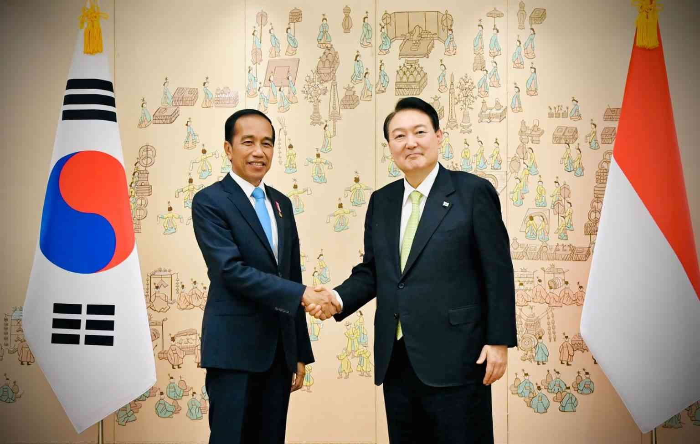

Kerjasama Bilateral
Melibatkan dua negara yang bekerja sama untuk mencapai tujuan bersama.
Tujuan --
- Memelihara Kepentingan Nasional
- Memelihara Perdamaian
- Meningkatkan Kesejahteraan Ekonomi
Contoh --
- Perjanjian Perdagangan
Ex: Indonesia dan Jepang -- kedua negara sepakat untuk mengurangi tarif impor dan ekspor barang tertentu
- Kerjasama Pendidikan
Ex: UI memiliki berbagai kerjasama dengan universitas di luar negeri, seperti Universitas Melbourne di Australia dan Universitas Kyoto di Jepang untuk penelitian bersama, pertukaran dosen, dan program gelar ganda
- Kerjasama Kesehatan
Ex: Program pelatihan yang diselenggarakan oleh negara-negara maju untuk tenaga medis dari Indonesia berkembang, seperti pelatihan dokter dan perawat Indonesia di rumah sakit-rumah sakit di Jepang dan Jerman
